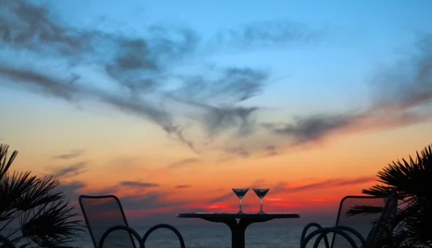

One of my favorite hobbies is coding and working on technical projects. I find immense satisfaction in building something from scratch, whether it's a small script to automate a task or a full-fledged application that solves a real-world problem. Coding gives me the creative freedom to explore, experiment, and innovate, which keeps me constantly engaged and curious.
Whenever I get some free time, I like to challenge myself with new technologies or programming problems. I often participate in hackathons, online coding contests, and collaborative projects with my peers. These experiences not only help sharpen my technical skills but also improve my problem-solving abilities and teamwork. Each project teaches me something new — sometimes it's about logic and algorithms, and other times it's about communication and presentation.
What I love most about this hobby is that it's constantly evolving. There's always something new to learn — a new programming language, a better framework, or an emerging trend in the tech world. Staying updated and continuously learning keeps me motivated and inspired. It also gives me a sense of purpose, especially when I can apply my knowledge to build solutions that help others.
Ratan Naval Tata (28 December 1937 – 9 October 2024) was an Indian industrialist and philanthropist. He served as the chairman of Tata Group and Tata Sons from 1991 to 2012 and he held the position of interim chairman from October 2016 to February 2017.[3][4] In 2000, he received the Padma Bhushan, the third highest civilian honour in India, followed by the Padma Vibhushan, the country's second highest civilian honour, in 2008.
Ratan Tata was the son of Naval Tata, who was adopted by Ratanji Tata, son of Jamshedji Tata, the founder of the Tata Group. He graduated from Cornell University College of Architecture with a bachelor's degree in architecture.
6:00 – 7:00 AM: Wake up, freshen up, drink water, stretch or do light exercise (e.g., walk, yoga, or Surya Namaskar)
7:00 – 8:00 AM: Take a shower, get ready, and have a healthy breakfast
8:00 – 12:00 PM: Begin work or studies — focused productive hours for office/school/college or learning new skills
2:00 – 1:00 PM: Continue working/studying or attend meetings/classes
1:00 – 2:00 PM: Lunch break and short rest
2:00 – 5:00 PM: Resume work/studies, do practical tasks, meetings, coding, or projects

5:00 – 7:00 PM: Wrap up the day's main work; go for a walk, light workout, or relax
7:00 – 8:00 PM: Dinner and time with family or friends
8:00 – 10:00 PM: Wind down — read, watch something light, review your day, plan for tomorrow, and sleep prep